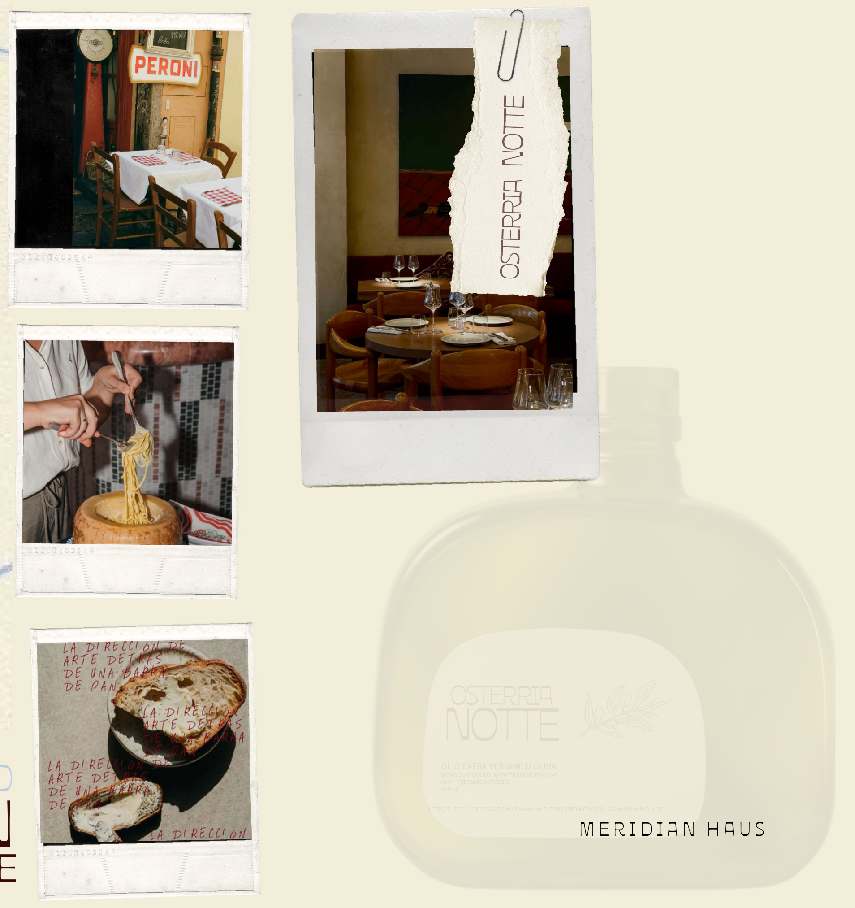
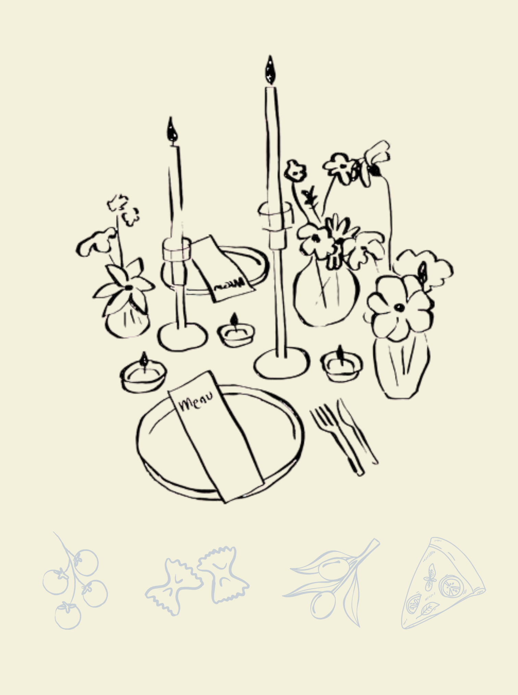
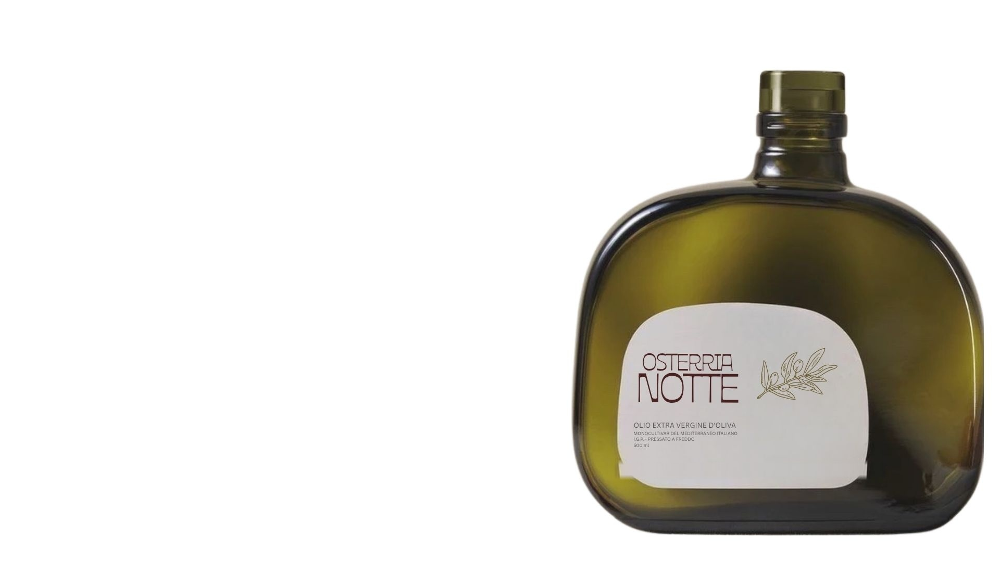
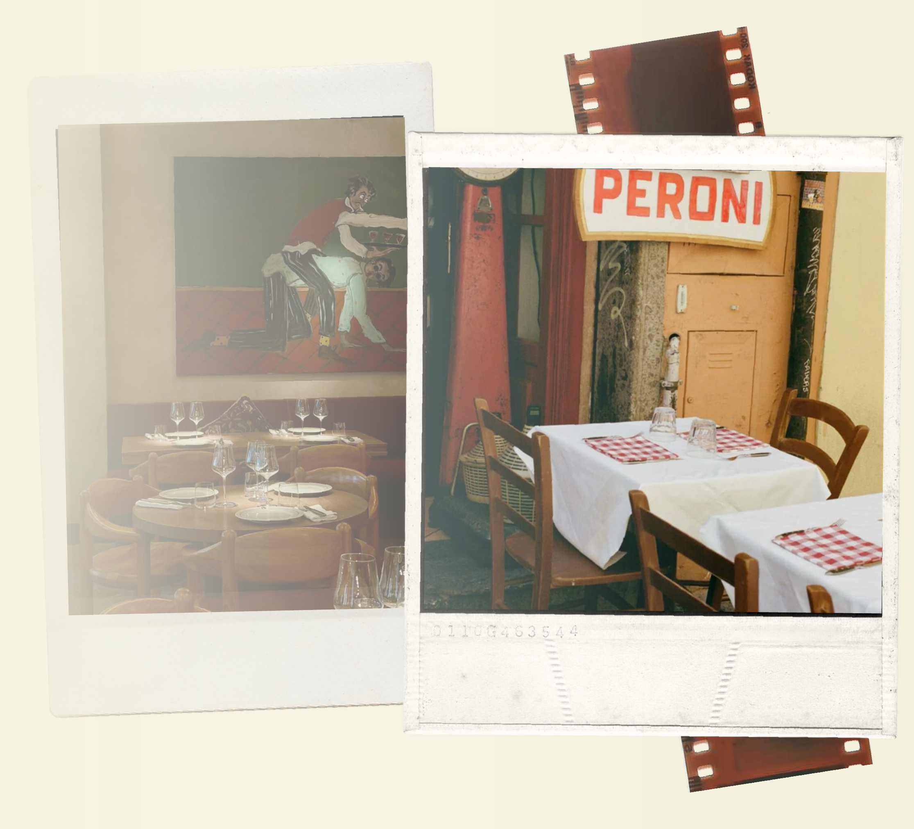
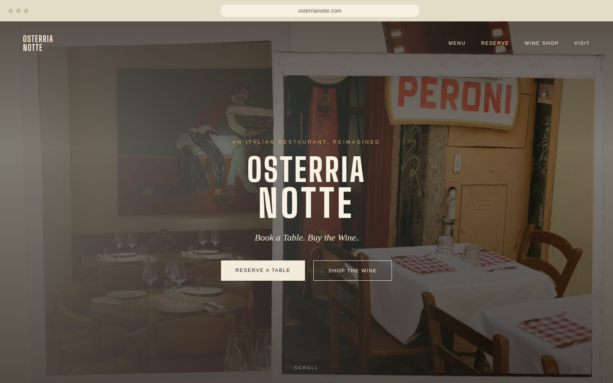

An Italian Restaurant, Reimagined.

Osterria Notte came to Meridian Haus as an Italian restaurant that looked like a hundred others — checkered napkins, a generic script logo, nothing that said who was actually cooking. The food was serious: handcrafted Neapolitan pasta, wood-fired classics, a wine list built by someone who cared. The brand hadn't caught up yet.
The task was to rebuild the identity around what the restaurant actually was — modern, eccentric Italian cooking, not a red-sauce trattoria — and carry that voice through every touchpoint a guest could hold, wear, or eat off of.

The wordmark leans into a tall, slightly eccentric display face — OSTERRIA stacked hard over NOTTE — paired with a warm, sun-bleached palette of cream, olive, and deep maroon that reads more coastal Italy than checkered tablecloth. Hand-drawn linework (tomatoes on the vine, farfalle, a torn olive branch) runs quietly through the system as texture, never as decoration for its own sake.
Every touchpoint carries the same conviction: this is a restaurant with a point of view, not a menu template with a nice font.
From takeout bags to the olive oil on every table, no touchpoint was left generic. Kraft takeout bags with a woven red pull-cord, gelato cups stamped for dine-in and delivery alike, a house-branded extra virgin olive oil bottle guests can buy on the way out. The mark travels well because it was built to — legible small, confident large.

Polaroid-style editorial photography carries the warmth, texture, and intimacy of the dining room itself — dimly lit corners, handmade pasta, art on the walls, a Peroni sign over a doorway that's seen a thousand dinners. The direction is raw and honest rather than styled: pasta pulled straight from a wheel of pecorino, sourdough torn open in morning light.

A full digital presence built to feel as rich as the restaurant itself — warm, immersive, and unmistakably brand-aligned. Reservations and the wine shop sit side by side as equal priorities, wrapped around full-bleed dining-room photography and the wordmark doing exactly what it does on the menu and the door.

Identity, packaging, menu, and a full digital presence, built as one continuous world instead of four separate deliverables. Osterria Notte now reads as a restaurant with a point of view — the kind of place people describe to their friends, not just the one closest to the office.
This project was shaped by a shared belief that hospitality is a design problem as much as a culinary one. Thank you for trusting that belief through every material decision.
Continue to the Next Project →